MOSS Image가 뭐길래
MOSS Image는 OpenMOSS 팀이 공개한 5B(50억) 파라미터 오픈소스 이미지 생성 모델이에요. 발표자가 이 모델을 소개하는 이유는 두 가지예요. AI(Artificial Intelligence) 그림 특유의 번들거리는 질감과 뭉개진 손가락 같은 'AI 티'가 많이 줄었고, 컴퓨터 사양이 높지 않아도 돌릴 수 있다는 거예요. 발표자는 VRAM 8GB 그래픽 카드로도 돌아간다고 말해요.
썸네일이 영상의 주장을 그대로 담고 있어요. 'AI 티, 완전히 사라졌다', '5B 오픈소스 끝판왕', 그리고 MOSS-Image와 ComfyUI를 함께 쓰는 실전 가이드라는 문구가 보여요.
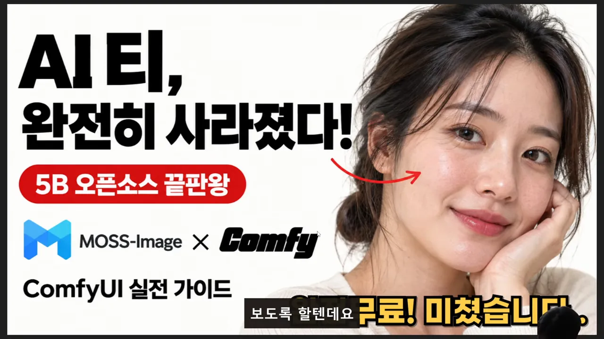
도입부에서는 직접 뽑은 결과물을 먼저 보여 줘요. 아래 그림은 밤거리 가게 위에 '치킨', '약국', '한강 분식' 한글 간판이 붙은 장면이에요. 세 간판 모두 글자가 깨지지 않았어요. 발표자는 이 밖에도 'MOSS IMAGE' 팻말, 'MORNING BREW' 카페 포스터, 차를 마시는 여성 사진을 차례로 보여 줘요. 추가로 학습한 LoRA 없이 기본 모델만으로 이렇게 나온다는 게 출발점이에요.
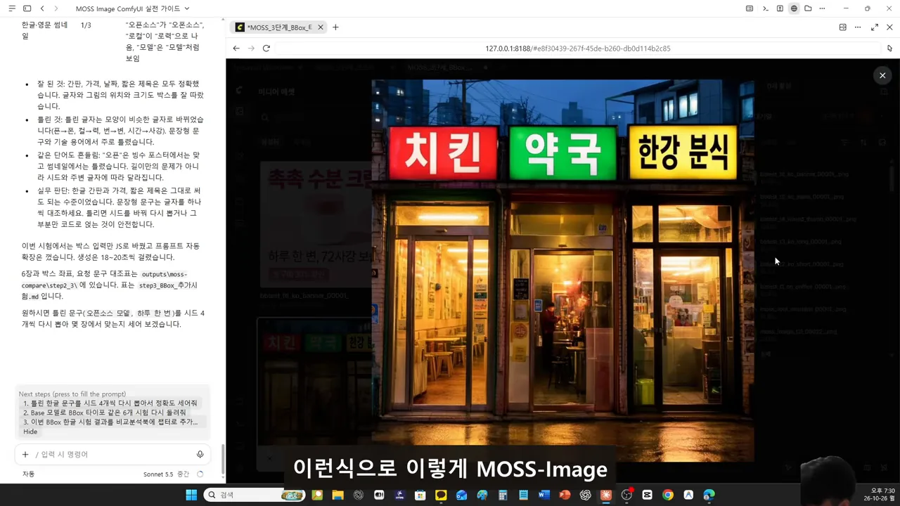
왜 로컬 무료 모델인가요
발표자는 기존 선택지의 불편을 세 가지로 짚어요. 미드저니 같은 유료 툴은 매달 구독료가 나가요. 로컬에서 Stable Diffusion을 돌리려면 VRAM이 큰 그래픽 카드가 필요한데, 값이 100만~200만 원대로 올랐어요. 여기에 여러 LoRA를 조합하는 세팅까지 하다 보면 지치기 쉬워요. MOSS Image는 이 세 가지를 한꺼번에 줄여 준다는 게 영상의 주장이에요.
허깅페이스에서 받고 에이전트로 설치하기
모델은 Hugging Face의 lodestones/Kromoss 페이지에서 받아요. 화면 위쪽 설명을 보면 Kromoss는 MOSS-Image-Base를 1024px에서 전체 파인튜닝한 모델이에요. 텍스트 인코더(Qwen3.5-9B)와 VAE(Variational Autoencoder)는 MOSS-Image-SFT와 같아서 그대로 바꿔 끼울 수 있다고 적혀 있어요. 그 아래에는 Base에서 증류한 8스텝 터보 LoRA 두 개가 함께 들어 있다는 설명이 이어져요.
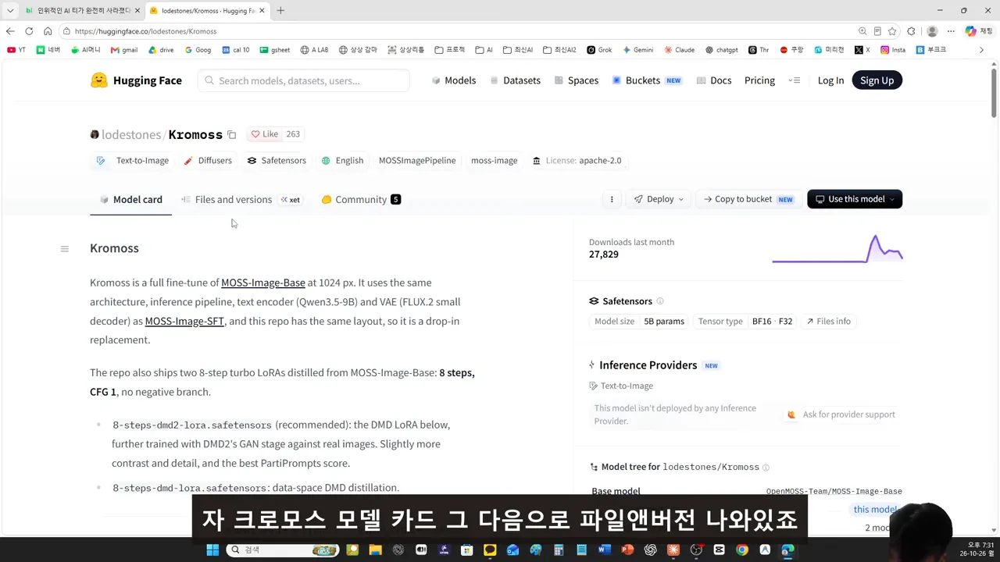
페이지를 내리면 ComfyUI용 파일 표가 나와요. 왼쪽 File 열이 받을 파일, 오른쪽 Put in 열이 넣을 폴더예요. 확산 모델 두 가지(kromoss_bf16, kromoss_int8_convrot), 텍스트 인코더 qwen3.5_9b_bf16, VAE flux2-vae_small, 그리고 8스텝 LoRA 두 개가 보여요.
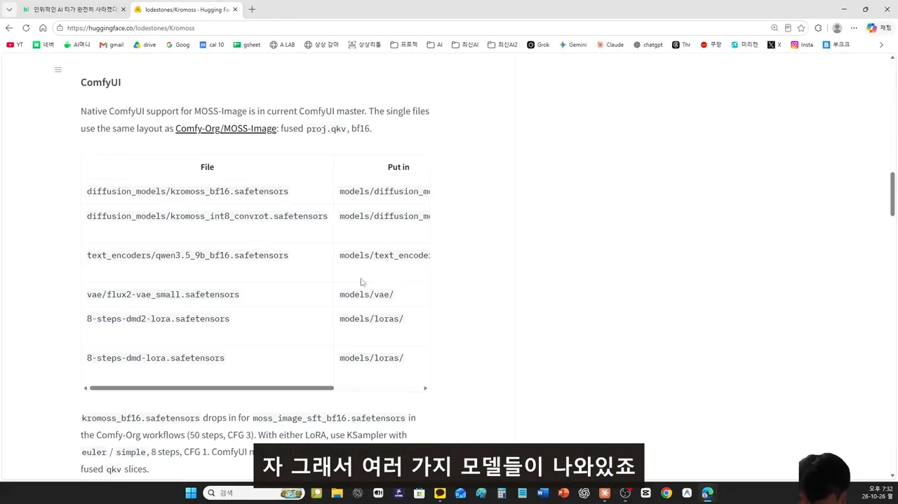
models/loras/에, 나머지는 각자 이름이 붙은 폴더에 들어가요. 영상 03:36에서 보기설치는 에이전트에게 맡겨요
발표자는 파일을 하나씩 받지 않았어요. 이 페이지 링크를 AI 에이전트에게 주고 설치해 달라고 하면 끝난다고 해요. 발표자는 Claude Code를 썼고, Claude가 모델을 받은 뒤 ComfyUI 워크플로우까지 만들어 띄워 줬어요.
아래 화면 왼쪽 '워크플로' 목록을 보면 MOSS_2단계_프롬프트자동확장, MOSS_3단계_BBox_타이포가 있어요. 가운데에는 3단계 워크플로우로 뽑은 '촉촉 수분 크림' 배너가 떠 있어요. 맨 왼쪽은 Claude가 결과를 분석한 메모예요. 이 배너에서는 '시간'이 '사강'으로 바뀌는 식으로 비슷한 모양의 글자로 틀렸다고 적혀 있어요.
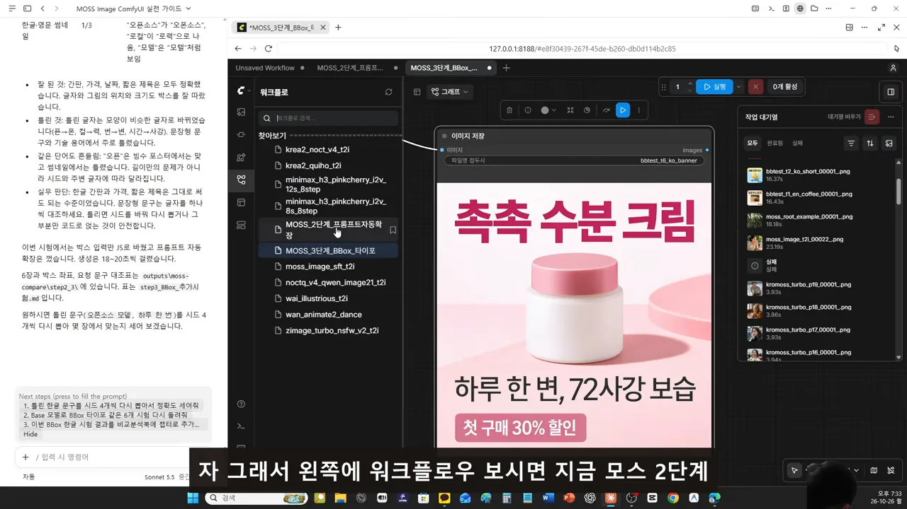
영상 전체가 이 워크플로우 순서대로 흘러가요. 블로그 가이드는 네 단계로 나눠 놨어요.
flowchart LR A["1단계
모델 고르기
Base가 메인"] --> B["2단계
프롬프트 자동 확장"] --> C["3단계
BBox 타이포"] --> D["4단계
8스텝 터보 LoRA"]
발표자는 MOSS 말고도 Wan, MiniMax, Krea 2 같은 다른 모델을 함께 테스트하고 있다고 말해요. 그중에서도 MOSS Image가 충분히 좋은 결과를 낸다고 봐요.
준비물과 모델 조합: Base가 메인
발표자가 블로그에 붙여 둔 비교 이미지부터 봐요. 왼쪽은 50스텝·CFG(Classifier-Free Guidance) 3, 가운데와 오른쪽은 8스텝·CFG 1에 8-steps-dmd-lora와 8-steps-dmd2-lora를 얹은 결과예요. 원래 50스텝으로 오래 걸리던 생성을 8스텝으로 줄이고, CFG 값만 맞춰 품질을 지켰다는 게 발표자의 설명이에요.
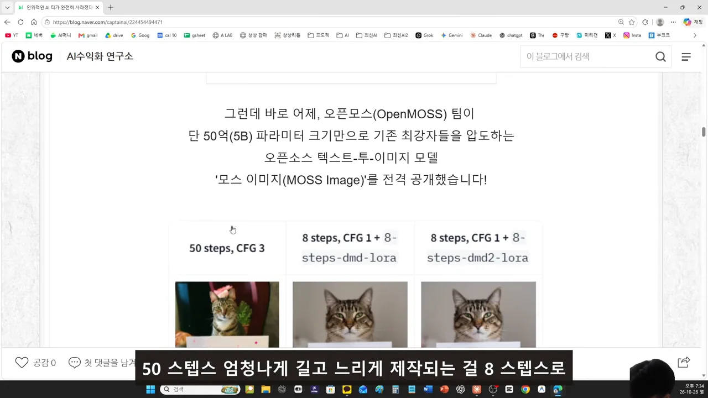
그다음에는 피부의 잔털이나 옷감 같은 디테일, 아웃포커싱된 배경을 별도 학습 모델 없이 카메라 사진처럼 뽑을 수 있다고 말해요. 8GB 가정용 그래픽 카드로도 장당 5~6초면 된다고 해요.
준비물은 세 가지예요
화면의 준비물 목록은 세 줄이에요. 1번은 실행 환경으로, 로컬 PC(Personal Computer)의 최신 ComfyUI나 클라우드 GPU(RunPod 등)를 쓰고 VRAM은 8기가도 가능하다고 적혀 있어요. 2번은 Hugging Face나 Civitai에서 MOSS Image Base 모델을 받으라는 거예요. 괄호 안에 'SFT 모델 단독 사용보다 Base 모델 사용을 강력 권장'이라고 덧붙였어요. 3번은 속도를 위한 MOSS Image Turbo LoRA와 SFT LoRA예요.
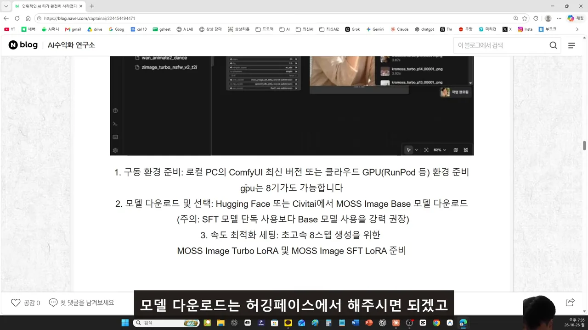
다음 화면은 실제로 받을 파일 표예요. kromoss_int8_convrot.safetensors와 moss_image_base_int8_convrot.safetensors는 둘 다 5.41GB로 diffusion_models 폴더에 들어가요. 8-steps-dmd2-lora.safetensors는 1.19GB로 loras 폴더에 들어가요. 위쪽 문장은 5B 파라미터라 8~10GB 수준의 보급형 VRAM에서도 가볍게 돌아간다고 설명해요.
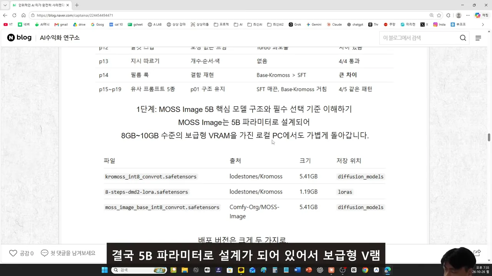
SFT를 단독으로 쓰지 마세요
배포판은 두 가지예요. 파인튜닝의 바탕으로 쓰는 Base, 지시를 잘 따르도록 다듬은 SFT예요. 화면에서 '여기서 핵심'이라고 강조한 문장은 이래요. SFT 모델을 단독으로 쓰지 말고, Base를 메인으로 올린 뒤 필요할 때 SFT LoRA를 살짝 섞으라는 거예요. 그래야 디테일이 뭉개지지 않고 가장 실사다운 질감이 나온다고 해요.
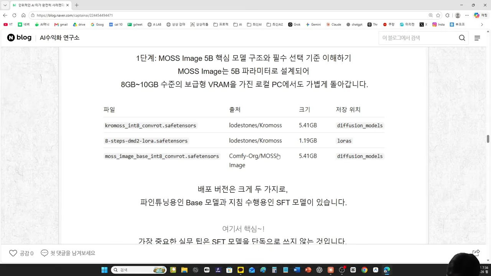
영상이 권하는 조합을 한 장으로 모으면 이래요. 아래 칸이 늘 깔리는 Base, 그 위에 필요할 때만 얹는 LoRA 두 개예요.
네 가지 설정으로 비교한 결과
발표자는 같은 프롬프트로 네 가지 설정을 나란히 뽑아 비교해요. 그림 위 라벨 순서대로 SFT 25스텝, Base 40스텝, Kromoss 40스텝, Kromoss 터보 8스텝이에요. 이 순서는 아래 모든 비교 그림에서 같아요.
필름 사진: 요청한 '결함'을 누가 살렸나
첫 프롬프트는 '1998년 일회용 필름 카메라로 찍은, 밤 해변 모닥불 파티에서 웃는 친구 넷'이에요. 직접 플래시, 적목 현상, 거친 필름 그레인, 바랜 색, 약한 흔들림까지 주문했어요. 네 장을 보면 맨 왼쪽 SFT만 유독 밝고 선명해요. 가운데 두 장(Base, Kromoss)은 색이 바래고 어두워서 옛날 필름 사진에 더 가까워요.
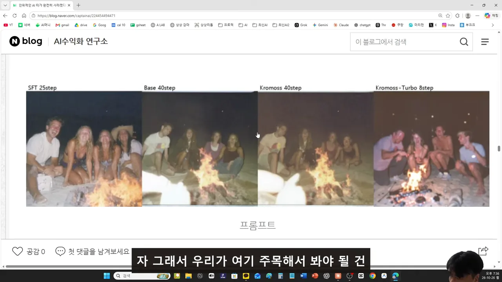
블로그의 판정은 이래요. SFT는 밝은 플래시와 선명한 색의 깔끔한 디지털 느낌이라 '바랜 색'과 '흔들림'이 약했어요. Base-Kromoss는 바랜 색조와 필름 스캔 느낌, 렌즈 앞을 가린 듯한 흐릿함까지 살려서 필름 결함을 요청대로 가장 잘 따랐어요. 터보는 그레인은 보이지만 색이 더 선명해서 중간쯤이에요. 결론은 Base 우세예요.
노인 얼굴: 주름과 모공
두 번째는 노인 얼굴 클로즈업이에요. 이번에는 네 장의 주름 표현을 비교해요. 맨 왼쪽 SFT는 주름은 있지만 피부가 매끈하고 고르게 보여요. 가운데 Kromoss는 주름이 깊고 잡티와 모공이 보여요. 맨 오른쪽 터보는 얼굴이 화면을 꽉 채우고 피부가 한결 매끈해요.
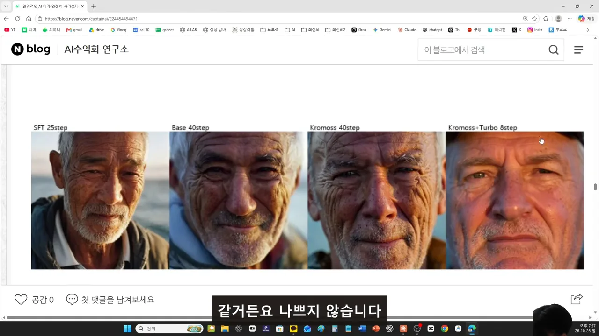
발표자는 말로는 맨 오른쪽 터보가 가장 자연스러워 보인다고 해요. 하지만 블로그 판정은 '질감은 Base-Kromoss 우세, 터보는 이 장면에서 약함'이에요. 터보는 얼굴이 화면을 가득 채우고 피부가 분홍빛으로 매끈해져서, 사진보다 클래식한 그림 느낌이 강하다는 이유예요. 인종 차이에 대해서는 시드 한 개의 결과라 경향이라고 단정하진 않는다고 덧붙였어요.
글씨: 영어는 깔끔, 한글은 조금 어색
세 번째는 글씨예요. 위쪽은 나무 팻말에 'MOSS IMAGE'를 든 여성, 아래쪽은 'MORNING BREW' 카페 포스터예요. 네 설정 모두 철자를 틀리지 않았어요. 포스터 아래쪽의 '$4.50' 가격 표시도 그대로 나왔어요.
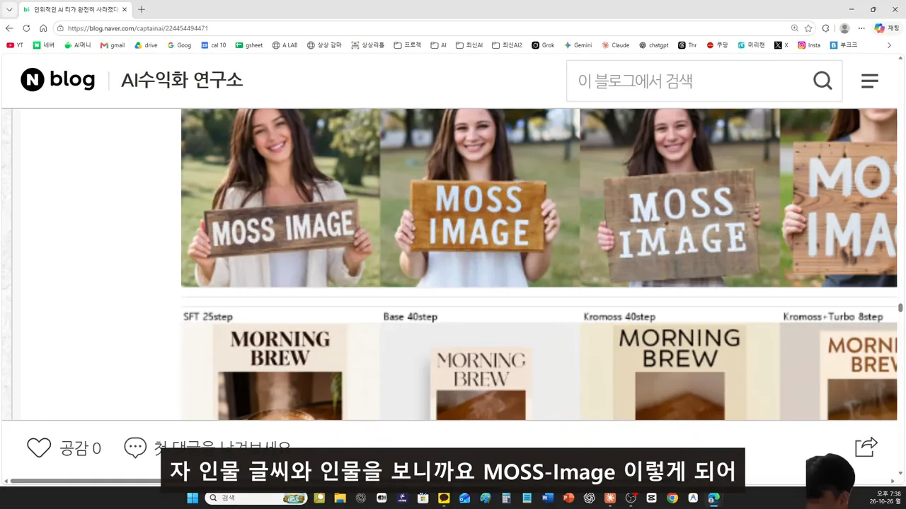
한글 간판 '한강 카페'는 조금 달라요. 네 장 모두 글자는 맞게 나왔어요. 다만 발표자는 몇 장의 글자 모양을 가리키며 어색하다고 말해요. 한글은 틀리진 않지만 품질이 살짝 아쉽고, 영어가 더 깔끔하다는 게 결론이에요.
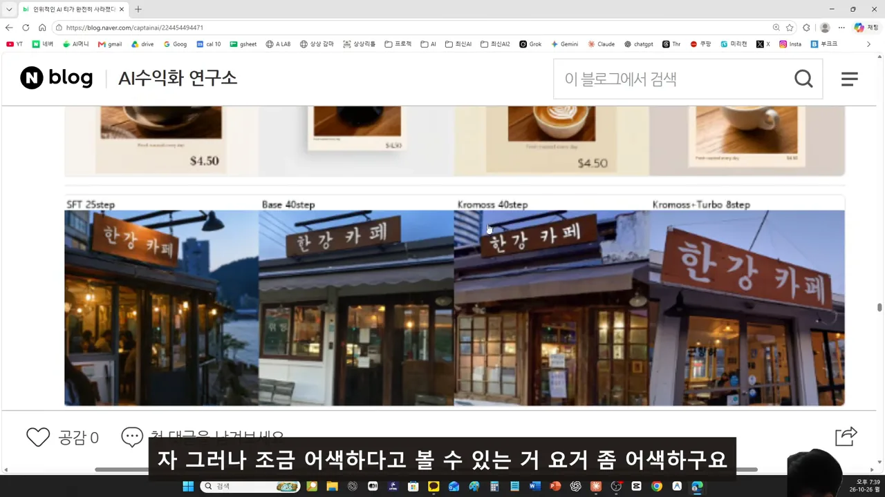
손: 8스텝의 한계
마지막은 나이 든 손이 실을 엮는 장면이에요. 네 장 모두 손가락 수와 모양은 무너지지 않았어요. 발표자는 8스텝도 나쁘지 않지만 화질이 조금 떨어지는 느낌이 있다고 해요. 25스텝, 40스텝과 나란히 보면 이런 디테일 차이를 찾을 수 있다고 말해요.
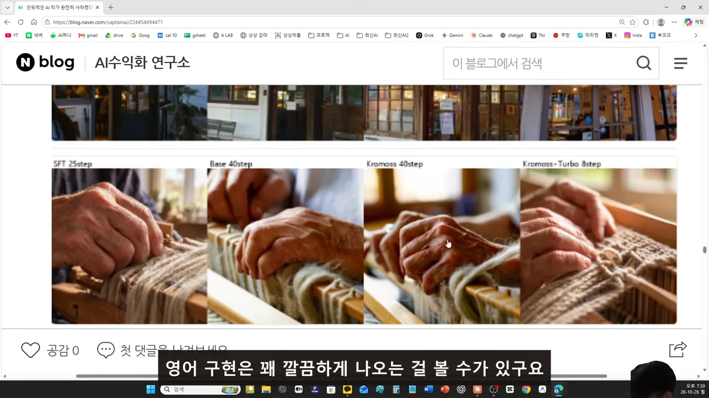
네 테스트를 표로 모으면 이래요.
| 테스트 | SFT 25스텝 | Base·Kromoss 40스텝 | Kromoss 터보 8스텝 | 판정 |
|---|---|---|---|---|
| 1998년 필름 사진 | 밝고 선명한 디지털 느낌 | 바랜 색, 필름 결함을 가장 충실하게 | 그레인은 있지만 색이 선명 | Base 우세 |
| 노인 얼굴 | 피부가 부드럽고 균일 | 주름·모공이 사실적 | 피부가 분홍빛으로 매끈함 | Kromoss 우세 |
| 영어·한글 글씨 | 영어 철자는 모두 정확, 한글은 맞지만 모양이 조금 어색 | 영어가 더 깔끔 | ||
| 손 디테일 | 선명함 | 화질이 조금 떨어짐 | 스텝이 많을수록 선명 | |
정리하면 속도는 8스텝이 가장 빠르고, 질감과 프롬프트 충실도는 Base 계열이 앞서요. 발표자는 8스텝이 내 용도에 충분히 좋은 결과를 내는지 직접 확인해 보는 게 중요하다고 강조해요.
짧게 써도 되는 프롬프트 자동 확장
두 번째 워크플로우의 핵심은 프롬프트를 길게 쓰지 않아도 된다는 거예요. 블로그 제목은 '프롬프트 스트레스 제로'예요. 본문에는 MOSS Image 워크플로우에 Qwen 3.5 기반 프롬프트 인핸서가 기본으로 들어 있다고 적혀 있어요.
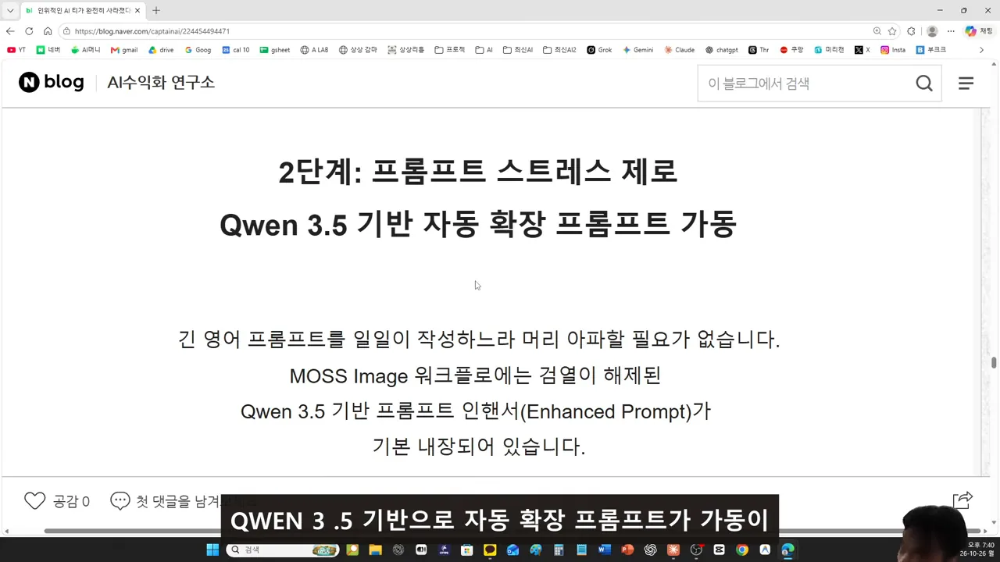
한 줄만 쓰고 실행해요
실제 입력 화면을 보면 'Text to Image (MOSS-Image)' 노드의 위 칸에 '한국 30대 커플이 꽃놀이' 한 줄만 들어 있어요. 그 아래 enable_prompt_upsampler 옵션이 true로 켜져 있어요. 맨 아래 칸은 네거티브 프롬프트로, 'nsfw, worst quality, bad anatomy, watermark, jpeg artifact'가 들어 있어요.
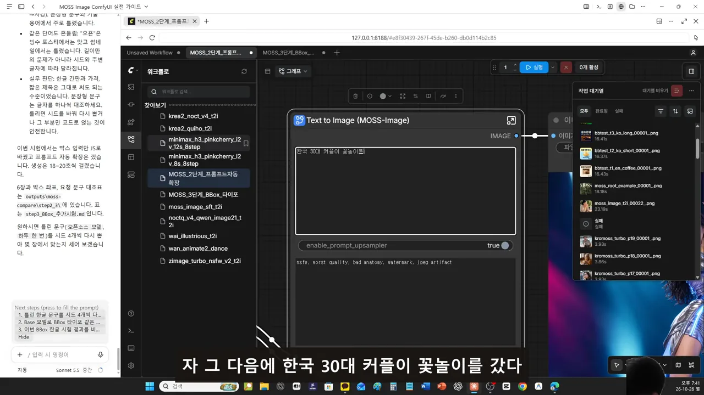
결과는 벚꽃 아래에서 한복을 입은 커플 사진이에요. 입력에는 한복도, 벚꽃도, 빛의 방향도 없었어요. 인핸서가 이런 디테일을 채워 넣은 거예요. 바로 앞에서는 '춤추는 한국 아이돌 여성' 한 줄로 무대 조명 아래 춤추는 장면도 뽑았어요. 발표자는 고민 1도 하지 않고 쓴 프롬프트라고 말해요.
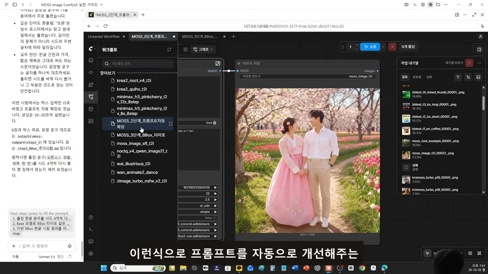
긴 프롬프트를 직접 넣을 수도 있어요
블로그에는 바로 복사해 쓸 수 있는 실전 프롬프트도 있어요. 35mm 사진, 햇살 드는 카페에 앉은 30대 한국 여성, 두 손으로 든 커피잔, 피부 질감과 머리카락, 니트 질감, 'Sony A7R V, 50mm f/1.4 렌즈'까지 하나하나 적었어요. 끝에는 'no plastic AI skin'으로 번들거리는 AI 피부를 막아요. 인핸서가 하는 일을 사람이 직접 한 셈이에요.
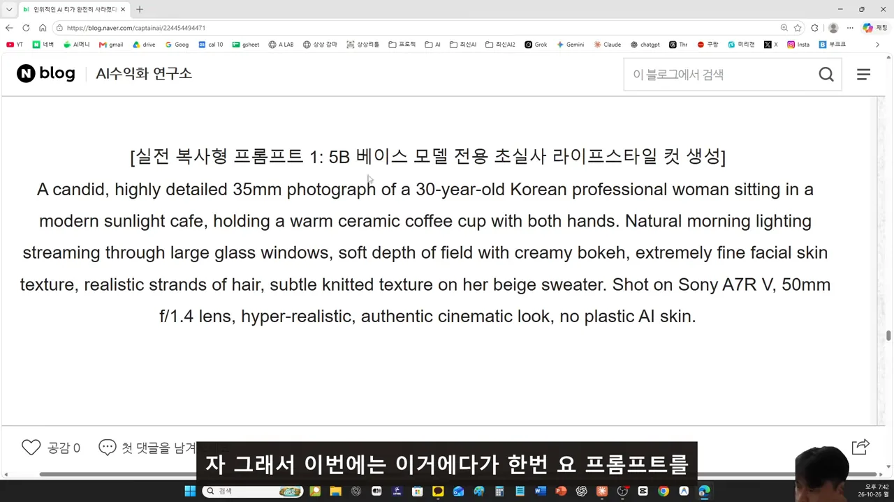
이 프롬프트와 네거티브 프롬프트를 넣고 실행하면 금세 결과가 나와요. 커피잔을 두 손으로 든 여성이 창가에 앉은 사진이에요. 발표자는 5080 대신 5070을 쓰는데도 이 정도 속도가 난다고 해요. 5080은 5070보다 거의 두 배 빨라서 한 장에 1.5~2초쯤이면 된다고 말해요.
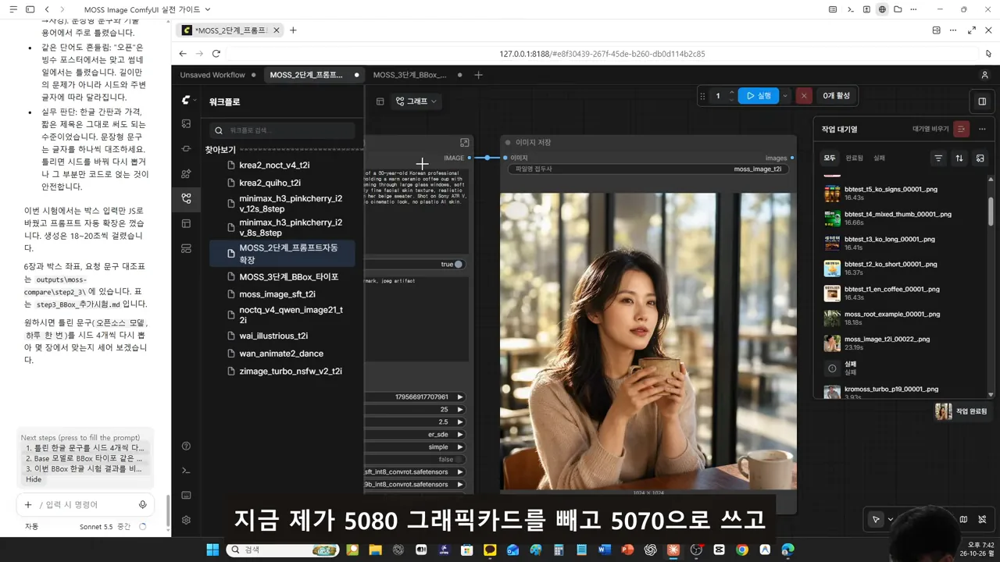
박스로 글자 위치 정하기
세 번째 워크플로우는 글자가 들어갈 자리를 박스로 정하는 기능이에요. 블로그는 'Ideogram 4급의 정확도'라고 소개해요. 캔버스에 바운딩 박스를 그리고, 박스 안에 들어갈 글자를 지정하면 그 경계 안에 글자를 넣어 준다는 설명이에요.
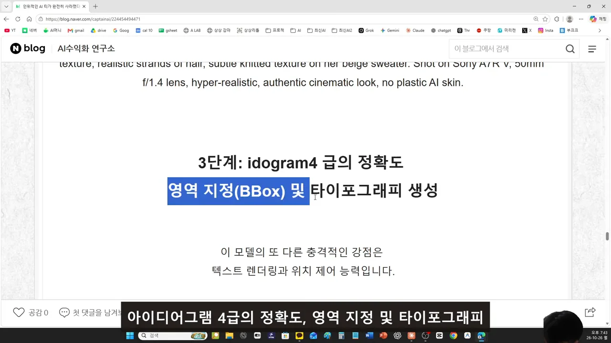
블로그의 예시는 '나무 팻말을 든 여성, 박스 안에는 MOSS IMAGE'예요. 박스로 지정한 영역의 경계를 지키면서 오타 없이 글자를 그린다고 해요. 그래서 상세 페이지, 썸네일, 포스터, 유튜브 타이틀처럼 글자가 들어가는 그림을 포토샵 없이 한 번에 만들 수 있다는 게 발표자의 말이에요.
시연은 한 번에 되지 않았어요
먼저 화장품 배너를 뽑았는데 글자가 한 번 틀렸어요. 아래 결과를 보면 '하루 한 번'은 맞았지만 '72시간'이 '72사강'으로 나왔어요. 왼쪽 노드 설정도 보여요. 이 워크플로우는 moss_image_sft_int8_convrot 모델에 25스텝, CFG 2.5로 돌았어요. 텍스트 인코더는 qwen3.5_9b_int8_convrot예요.
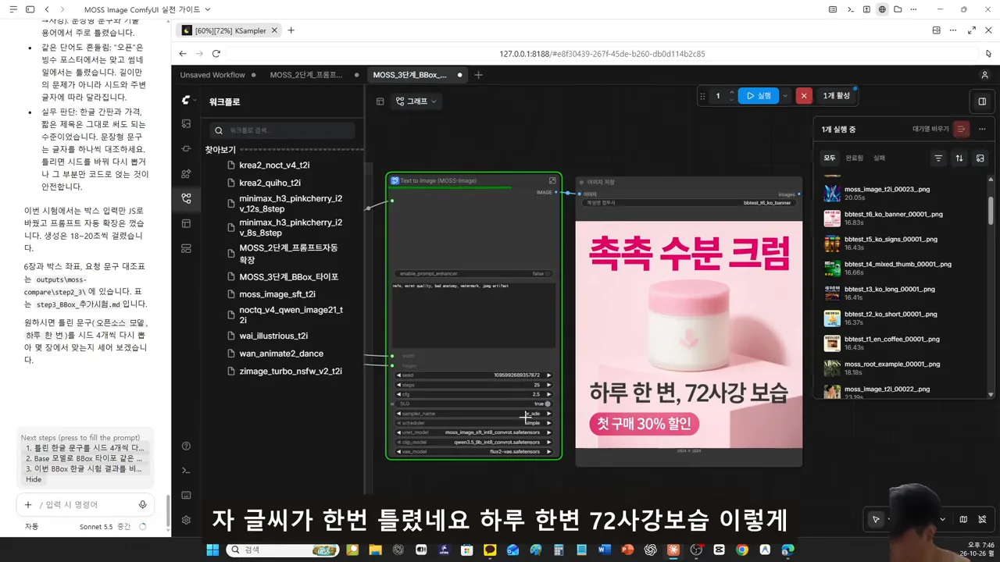
그다음 팻말 프롬프트를 넣었는데도 계속 화장품이 나왔어요. 발표자는 Claude에게 '계속 화장품만 그려져, 다시 입력해 봐'라고 요청해요. 아래 화면 왼쪽이 Claude의 답이에요. 마지막에 돌린 화장품 배너의 박스 6개 설정이 그대로 남아 있었고, 이 워크플로우는 프롬프트보다 박스 목록이 우선이라 화장품이 나왔다는 진단이에요. Claude는 박스와 프롬프트를 모두 팻말 장면으로 바꿔 다시 실행했어요.
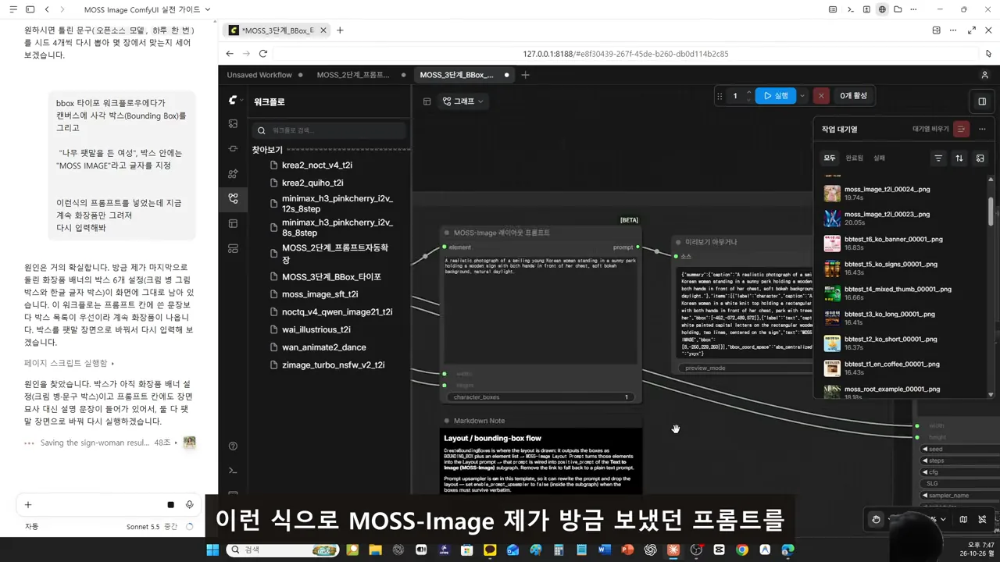
다시 돌린 결과는 공원에 선 여성이 'MOSS IMAGE' 팻말을 가슴 앞에 든 사진이에요. 실제로 들어간 프롬프트는 'a realistic photograph of smiling young Korean woman standing in a sunny park'로 시작해요. 팻말 글자는 박스 안에 오타 없이 들어갔어요.
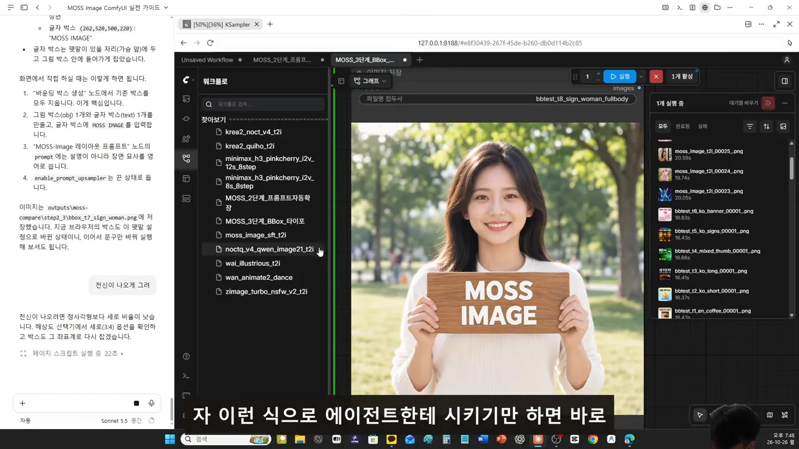
정사각형·상반신이 유리해요
발표자가 '전신이 나오게 그려'라고 하자 Claude가 세로 3:4 비율 옵션으로 바꿔 다시 뽑았어요. 아래 결과는 전신이 나왔지만 팔다리 비율이 조금 어색해요. 글자와 얼굴은 문제없었어요.
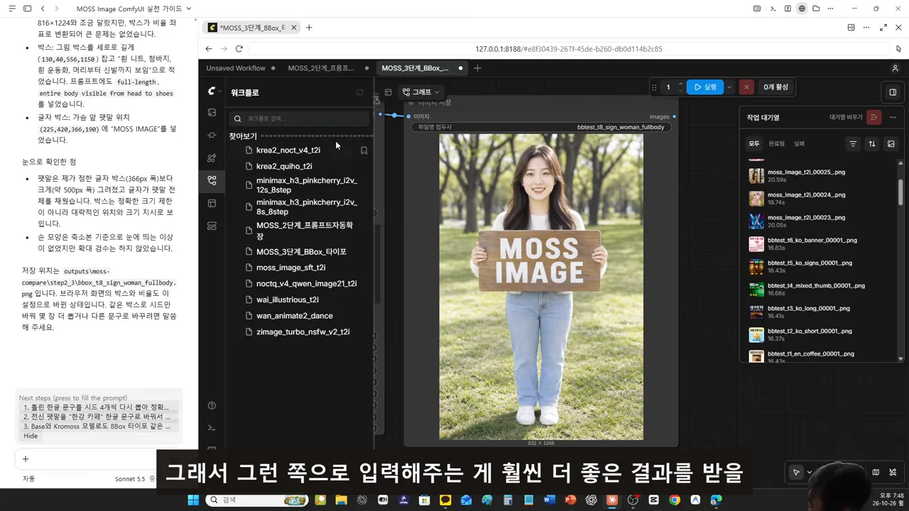
발표자의 설명은 이래요. MOSS Image는 1:1 정사각형, 상반신 위주 이미지를 많이 학습해서 3:4 비율에 약하다는 거예요. 그래서 정사각형·상반신 구도로 요청하는 편이 결과가 훨씬 낫다고 해요.
8스텝 터보 LoRA와 자주 막히는 곳
마지막 단계는 속도예요. 블로그 제목은 '8스텝 터보 로라(Turbo LoRA)로 생성 시간 5초 단축'이에요. 그 아래에는 Kromoss 모델 카드의 설명을 그대로 옮겨 놨어요. 두 LoRA 모두 MOSS-Image-Base(50스텝, CFG 3)에서 증류했고 Kromoss에도 그대로 쓸 수 있다는 내용이에요.
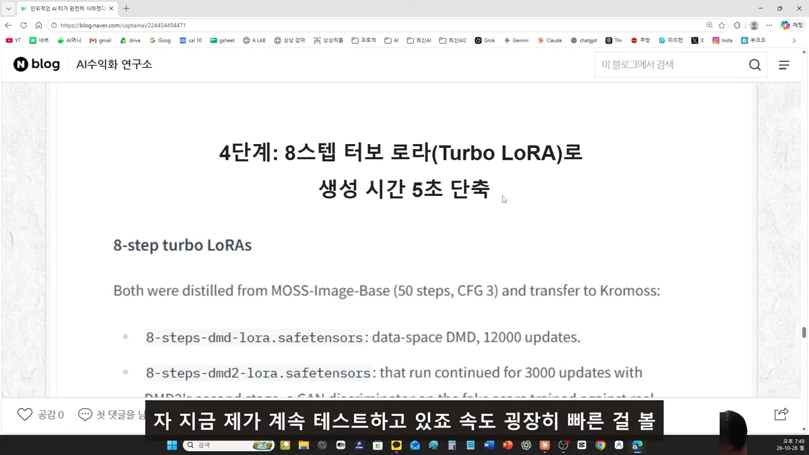
8-steps-dmd-lora는 12000번 학습했고, 8-steps-dmd2-lora는 거기서 3000번을 더 학습한 버전이에요. 영상 19:26에서 보기왜 터보가 필요한지는 아래 문단이 설명해요. 기본 Base 모델을 50스텝(CFG 4.0)으로 돌리면 품질은 좋지만 장당 30초~1분 넘게 기다려야 해요. 실무 생산성을 끌어올리려면 8스텝 터보 LoRA를 붙이라는 권고예요.
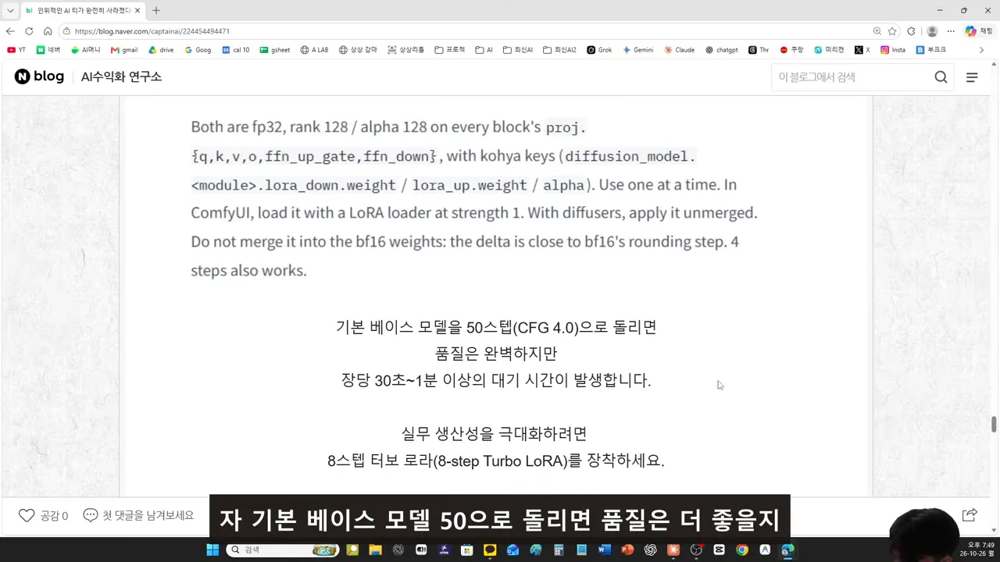
영상에 나온 숫자를 한데 모으면 차이가 분명해요. 발표자는 50스텝이 장당 30초, 8스텝 터보가 5~6초라고 말해요. 자기 PC에서는 한 장에 3~4초 걸렸다고 하고, 앞서 본 대기열 화면에도 kromoss_turbo 작업이 3.9초 안팎으로 찍혀 있었어요.
블로그는 스타일 LoRA를 섞는 방법도 소개해요. 화면 위 고양이 그림들처럼 8스텝만으로 장당 5~6초에 결과가 나오고, Civitai의 Grainscape(필름 그레인 질감)나 Feverdream 같은 스타일 LoRA를 0.4~0.6 강도로 섞으면 나만의 브랜드 비주얼을 계속 같은 느낌으로 뽑을 수 있다고 해요.
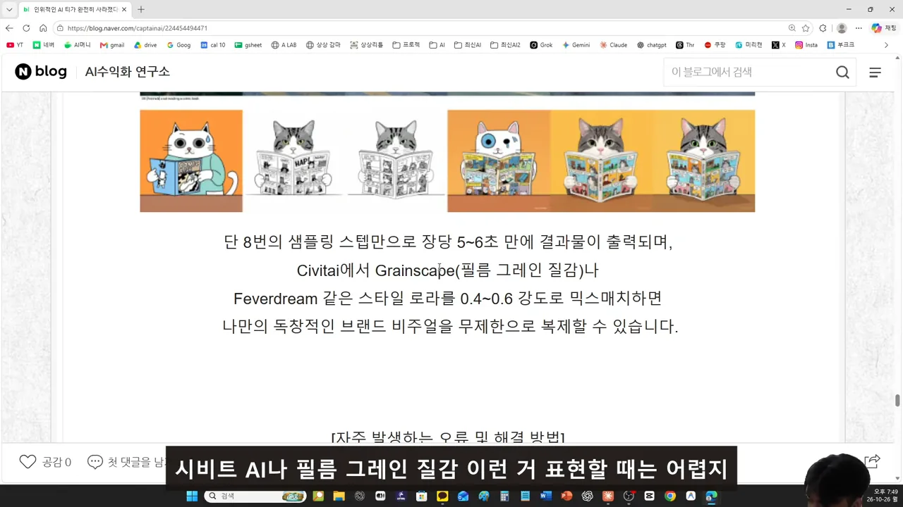
자주 막히는 곳 두 가지
블로그의 '자주 발생하는 오류 및 해결 방법'에는 두 문제가 적혀 있어요. 첫째, 터보 모드를 켜면 네거티브 프롬프트가 전혀 먹히지 않아요. 터보 LoRA는 CFG가 낮으면 네거티브 프롬프트를 건너뛰는 구조라서예요. 네거티브를 강하게 걸고 싶으면 CFG를 조금 올려 다시 생성하라고 해요. 둘째, 인페인팅이나 부분 수정을 하면 원본이 완전히 다른 그림으로 바뀌어요. MOSS Image는 텍스트-투-이미지 전용이라서예요. 부분 수정은 편집 전용 모델인 Qwen Image 2.1을 쓰는 게 훨씬 정확하다고 해요.
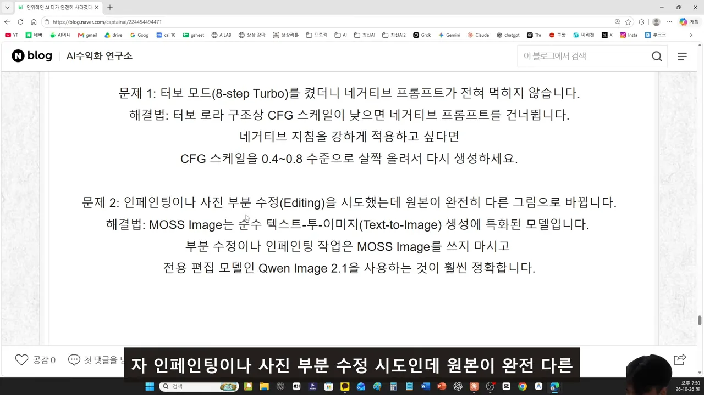
발표자는 1인 사업가나 크리에이터라면 유료 이미지 툴 없이 자기 컴퓨터에서 MOSS Image로 만들어 보라고 권하며 마무리해요. 전자책 표지, 블로그 대표 썸네일, 인스타그램 카드 뉴스, 랜딩 페이지 이미지처럼 상업용 비주얼을 외주 비용 없이 만들 수 있다는 거예요.